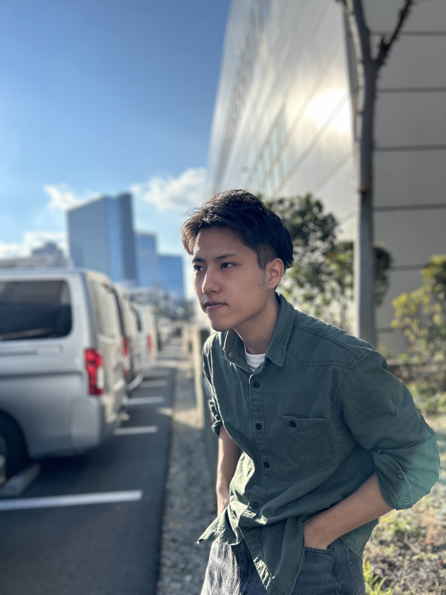

自己紹介
目黒陽生
Webデザイナー
めぐろ・はるき06年1月17日生まれ、神奈川県出身。小学生の頃プログラミングに
興味を持ち
町田工科高校へ進学する。
町田工科高校二年へ進級し、情報テクノロジー系列に所属。
週1、4単位の実技実習でソフトウェアを担当している担任の先生の実習を受け、
Webデザインに興味を持つ。
2024年に日本電子専門学校に進学しコーディングやデザインの勉強、そして人間力を学ぶ。
UI,UX、デザインの勉強を学ぶことでデザインの難しさと深さに気づく。
ユーザに寄り添えるデザインを作れるデザイナーになりたい。
TOOLS
- Illustrator
- Photoshop
- Figma
- VS Code
- PremiumPro